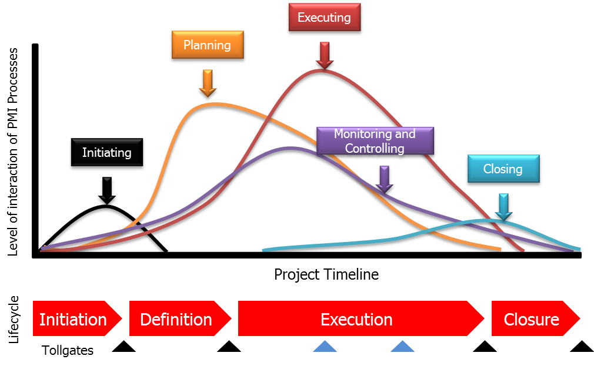

As per Project Management Body of Knowledge (PMBOK),
-
Project management processes ensure the effective flow of project throughout its existence. These
processes encompass the tools and techniques involved in applying the skills and capabilities described in
knowledge areas.
-
Process Group includes the constituent project management processes that are linked by the
respective inputs and outputs where the result or outcome of one process becomes input to another. The Process
Groups are not project phases.
-
Project lifecycle is a collection of generally sequential and sometime overlapping project phases
whose name and number are determined by the management and control needs of the organisation or organisations
involved in the project, the nature of the project itself, and its area of application.
The below image displays how the process groups are aligned across the project lifecycle.
